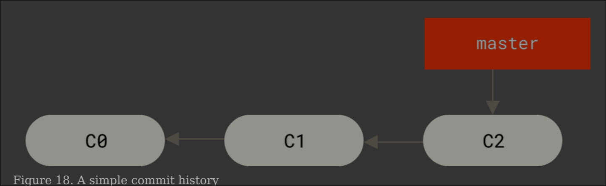
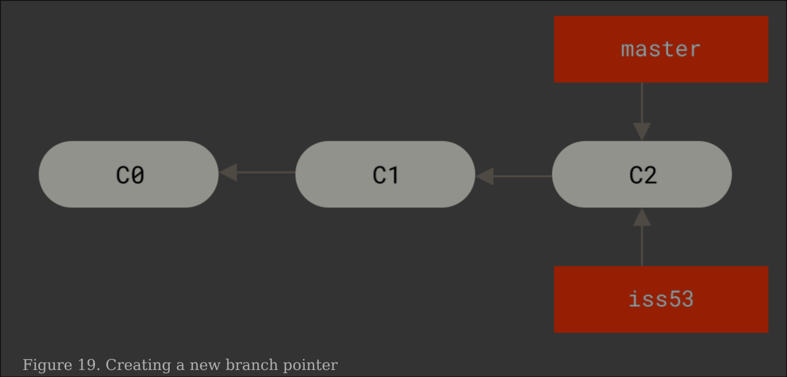
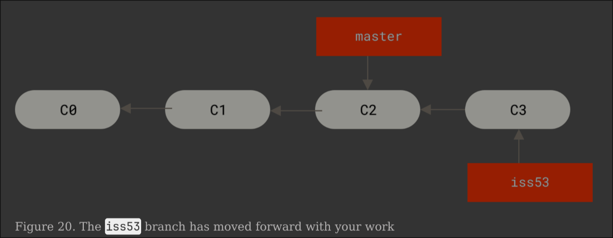

Version Control with Git
✔️ Click to Expand Table of Contents
First, I'll breefly explain some of the limitations of NixOS Rollbacks and then I'll go into how Git compliments them.
Limitations of NixOS Rollbacks
NixOS is famous for its ability to roll back to previous system generations,
either from the boot menu or with commands like nixos-rebuild --rollback.
When you perform rollbacks in NixOS, whether from the boot menu or using
commands like nixos-rebuild --rollback only the contents and symlinks managed
by the Nix store are affected. The rollback works by switching which system
generation is active, atomically updating symlinks to point to the previous
version of all packages, systemd units and services stored in /nix/store.
However, it’s important to understand what these rollbacks actually do and what they don’t do. What NixOS Rollbacks Cover
-
System generations: When you rebuild your system, NixOS creates a new “generation” that you can boot into or roll back to. This includes all packages, services, and system configuration managed by Nix.
-
Quick recovery: If an upgrade breaks your system, you can easily select an older generation at boot and get back to a working state
Key Limitations:
-
Configuration files are not reverted: Rolling back only changes which system generation is active, it does not revert your actual configuration files (like
configuration.nixor your flake files) -
User data and service data are not rolled back: Only files managed by Nix are affected. Databases, user files, and other persistent data remain unchanged, which can cause problems if, for example, a service migrates its database schema during an upgrade
-
Manual changes persist: Any manual edits to configuration files or system state outside of Nix are not reverted by a rollback
How Git Helps
-
Tracks every configuration change: By version-controlling your NixOS configs with Git, you can easily see what changed, when, and why.
-
True config rollback: If a configuration change causes issues, you can use
git checkoutorgit revertto restore your config files to a previous good state, then rebuild your system -
Safer experimentation: You can confidently try new settings or upgrades, knowing you can roll back both your system state (with NixOS generations) and your config files (with Git).
-
Collaboration and backup: Git lets you share your setup, collaborate with others, and restore your configuration if your machine is lost or damaged.
In summary: NixOS rollbacks are powerful for system state, but they don’t manage your configuration file history. Git fills this gap, giving you full control and traceability over your NixOS configs making your system both robust and truly reproducible. Version control is a fundamental tool for anyone working with NixOS, whether you’re customizing your desktop, managing servers, or sharing your configuration with others. Git is the most popular version control system and is used by the NixOS community to track, share, and back up system configurations.
Why use Git with NixOS?
-
Track every change: Git lets you record every modification to your configuration files, so you can always see what changed, when, and why.
-
Experiment safely: Try new settings or packages without fear—if something breaks, you can easily roll back to a previous working state.
-
Sync across machines: With Git, you can keep your NixOS setups in sync between your laptop, desktop, or servers, and collaborate with others.
-
Disaster recovery: Accidentally delete your config? With Git, you can restore it from your repository in minutes.
Installing Git on NixOS
You can install Git by adding it to your system packages in your configuration.nix or via Home Manager:
Git Tips
If you develop good git practices on your own repositories it will make it easier to contribute with others as well as get help from others.
Commit Tips:
Every time a logical component is completed, commit it. Smaller commits make it easier for other devs and yourself to understand the changes and roll them back if necessary. This also makes it easier to share your code with others to get help when needed and makes merge conflicts less frequent and complex.
Finish the component, then commit it: There's really no reason to commit
unfinished work, use git stash for unfinished work and git commit for when
the logical component is complete. Use common sense and break complex components
into logical chunks that can be finished quickly to allow yourself to commit
more often.
Write Good Commit Messages: Begin with a summary of your changes, add a line
of whitespace between the summary and the body of your message. Make it clear
why this change was necessary. Use consistent language with generated messages
from commands like git merge which is imperative and present tense
(<<change>>, not <<changed>> or <<changes>>)
A Git workflow is a recipe or recommendation for how to use Git to accomplish work in a consistent and productive manner. Having a defined workflow lets you leverage Git effectively and consistently. This is especially important when working on a team.
Origin is the default name (alias) for the remote repository that your local repository is connected to, usually the one you cloned from.
Remote Repositories are versions of your project that are hosted on the internet or network somewhere.
-
When you run
git push origin main, you're telling Git to push your changes to the remote repo calledorigin. -
You can see which URL
originpoints to withgit remote -v. -
You can have multiple remotes (like
origin,upstream, etc.) each pointing to a different remote repo. Each of which is generally either read-only or read/write for you. Collaborating involves managing these remotes and pushing and pulling data to and from them when you need to share work.
❗ You can have a remote repo on your local machine. The word "remote" doesn't imply that the repository is somewhere else, only that it's elsewhere.
- The name
originis just a convention, it's not special. It is automatically set when you clone a repo.
Local is your local copy of the repository, git tracks the differences between local and remote which is a repo hosted elsewhere (e.g., GitHub GitLab etc.)
The Upstream in Git typically refers to the original repository from which your local repository or fork was derived. The Upstream is the remote repo that serves as the main source of truth, often the original project you forked from. You typically fetch changes from upstream to update your local repo with the latest updates from the original project, but you don't push to upstream unless you have write access.
A Basic Git Workflow
- Initialize your Repository:
If you haven't already created a Git repo in your NixOS config directory (for
example, in your flake or /etc/nixos):
cd ~/flake
git init
git add .
git commit -m "Initial commit: NixOS Configuration"
Taking this initial snapshot with Git is a best practice—it captures the exact state of your working configuration before you make any changes.
-
The command
git add .stages all files in the directory (and its subdirectories) for commit, meaning Git will keep track of them in your project history. -
The command
git commit -m "message"then saves a snapshot of these staged files, along with your descriptive message, into the repository.- Think of a commit as a "save point" in your project. You can always go back
to this point if you need to, making it easy to experiment or recover from
mistakes. This two-step process, staging with
git addand saving withgit commitis at the heart of how Git tracks and manages changes over time.
- Think of a commit as a "save point" in your project. You can always go back
to this point if you need to, making it easy to experiment or recover from
mistakes. This two-step process, staging with
- Make and Track Changes:
Now that you've saved a snapshot of your working configuration, you're free to experiment and try new things, even if they might break your setup.
Suppose you you want to try a new desktop environment, like Xfce. You edit your
configuration.nix to add:
services.xserver.desktopManager.xfce.enable = true;
You run:
sudo nixos-rebuild switch # if configuration.nix is in /etc/nixos/
but something goes wrong: the system boots, but your desktop is broken or won't start. You decide to roll back using the boot menu or:
sudo nixos-rebuild switch --rollback
What happens?
-
Your system reverts to the previous working generation in
/nix/store -
But: Your
configuration.nixfile is still changed, it still has the line enabling Xfce. If you rebuild again, you'll get the same broken system, because your config itself wasn't rolled back.
How does Git Help on Failure?
Git gives you quite a few options and ways to inspect what has been done.
-
Use
git statusto see what's changed, andgit checkout -- <file>to restore any file to its last committed state. -
Review your changes with
git diffto see exactly what you modified before deciding whether to keep or revert those changes. -
Reset everything with
git reset --hard HEAD, this will discard all local changes and return to your last commit.
With Git you can simply run:
git checkout HEAD~1 configuration.nix
# or, if you committed before the change:
git revert <commit-hash>
Show the full hash of the latest commit:
git rev-parse HEAD
f53fef375d89496c0174e70ce94993d43335098e
Short hash:
git log --pretty=format:'%h' -n 1
f53fef3
git revert f53fef3
Show a list of Recent commits:
git log
# a list of all commits, with hashes, author, date, and message
git log --oneline
git log --oneline
f53fef3 (HEAD -> main) thunar
b34ea22 thunar
801cbcf thunar
5e72ba5 sops
8b67c59 sops
1a353cb sops
You can copy the commit hash from any of these and use it in commands like
git checkout <hash> or git revert <hash>.
Commit successful experiments
- If your changes work, stage, and commit them:
git add .
# or more specifically the file you changed or created
git add configuration.nix
git commit -m "Describe the new feature or fix"
Basic Branching
Branching means to diverge from the main line of development and continue to do work without risking messing up your main branch. There are a few commits on your main branch so to visualise this it would look something like this, image is from Pro Git:

Let's say you haven't ran nix flake update in a while and you don't want to
introduce errors to your working configuration. To do so we can first, make sure
we don't lose any changes on our main branch:
git add .
git commit -m "Staging changes before switching branches"
# I always like to make sure the configuration will build before pushing to git
sudo nixos-rebuild switch --flake .
# If everything builds and looks correct
git push origin main
OR, if you have incomplete changes that you don't want to commit yet you can
stash them with git stash:
git status
On branch main
Your branch is ahead of 'origin/main' by 1 commit.
(use "git push" to publish your local commits)
Changes not staged for commit:
(use "git add <file>..." to update what will be committed)
(use "git restore <file>..." to discard changes in working directory)
modified: home/git.nix
no changes added to commit (use "git add" and/or "git commit -a")
Now we want to switch branches, without committing the incomplete changes to
git.nix:
git stash
Saved working directory and index state WIP on main: 0e46d6b git: lol alias
git status
On branch main
Your branch is ahead of 'origin/main' by 1 commit.
(use "git push" to publish your local commits)
nothing to commit, working tree clean
❗
git stashis equivalent togit stash push
To see which stashes you have stored, use git sash list:
git stash list
stash@{0}: WIP on main: 0e46d6b git: lol alias
To apply the most recent stash:
git stash apply
git add home/git.nix
On branch main
Your branch is ahead of 'origin/main' by 1 commit.
(use "git push" to publish your local commits)
Changes not staged for commit:
(use "git add <file>..." to update what will be committed)
(use "git restore <file>..." to discard changes in working directory)
modified: home/git.nix
# or for multiple stashes
git stash apply stash@{2}
Running git stash apply applies the changes that were in your stash but
doesn't automatically restage them, to apply the changes and stage them in one
command:
git stash apply --index
Now let's create our branch so we can safely update:
git checkout -b update-test
Switched to a new branch 'update-test'
-b is to switch to the branch that was just created
Some may prefer a more descriptive branch name such as: update/flake-inputs, I
kept it short for the example. Or if your company uses an issue tracker,
including the ticket number in the branch name can be helpful:
update/123-flake-inputs
The above command is equivalent to:
git branch update-test
git checkout update-test
Now our branches would look something like this, note how both branches currently point to the same commit:

Now, lets run our update:
nix flake update
sudo nixos-rebuild test --flake .
# If everything looks ok let's try applying the changes
sudo nixos-rebuild switch --flake .
# And if everything looks ok:
git add .
git commit -m "feat: Updated all flake inputs"
git push origin update-test
❗ This is the same workflow for commiting a PR. After you first fork and clone the repo you want to work on, you create a new feature branch and push to that branch on your fork. This allows you to create a PR comparing your changes to their existing configuration.
At this point our graph would look similar to the following:

If we are satisfied, we can switch back to our main branch and merge
update-test into it:
git checkout main
git merge origin/update-test
git branch -D update-test
sudo nixos-rebuild test --flake .
sudo nixos-rebuild switch --flake .
It's good practice to delete a branch after you've merged and are done with it.
Configure Git Declaratively
The following example is the git.nix from the hydenix project it shows some
custom options and a way to manage everything from a single location:
# git.nix from hydenix: declarative Git configuration for Home Manager
{ lib, config, ... }:
let
cfg = config.hydenix.hm.git;
in
{
options.hydenix.hm.git = {
enable = lib.mkOption {
type = lib.types.bool;
default = config.hydenix.hm.enable;
description = "Enable git module";
};
name = lib.mkOption {
type = lib.types.nullOr lib.types.str;
default = null;
description = "Git user name";
};
email = lib.mkOption {
type = lib.types.nullOr lib.types.str;
default = null;
description = "Git user email";
};
};
config = lib.mkIf cfg.enable {
programs.git = {
enable = true;
userName = cfg.name;
userEmail = cfg.email;
extraConfig = {
init.defaultBranch = "main";
pull.rebase = false;
};
};
};
}
❗ You can easily change the name of the option, everything after
config.is custom. So you could change it to for example,config.custom.gitand you would enable it withcustom.git.enable = true;in yourhome.nixor equivalent.
Then he has a hm/default.nix with the following
#...snip...
# hydenix home-manager options go here
hydenix.hm = {
#! Important options
enable = true;
git = {
enable = true; # enable git module
name = null; # git user name eg "John Doe"
email = null; # git user email eg "john.doe@example.com"
};
}
# ... snip ...
You can enable git, and set your git username as well as git email right here.